Costruire il villaggio di Fossalta.
Riferimento operativo per modellazione, assemblaggio e sostituzione dei proxy con asset Environment. Il modello definisce la scala e gli spazi percorribili; le immagini definiscono il carattere visivo.
Il luogo
Insediamento agricolo della Romagna rurale del XII secolo, circa 1150–1190. Case, chiesa, fienili, botteghe e corti si organizzano attorno alla viabilità e alla piazza. Campi, siepi, graticci e canale costruiscono il margine.
Obiettivo visivo: architettura rurale coerente, materiali leggibili, spazi di lavoro riconoscibili e passaggi credibili alla scala del personaggio.
Come leggere le misure
W × D: dimensioni esterne delle pareti. H: altezza totale comprensiva di tetto e coronamenti. Gli aggetti del tetto sono indicati nelle schede.
La pianta usa metri, origine al mercato, X Est e Y Nord. Nel progetto Unreal le coordinate sono in centimetri. Conservare posa e scala dei proxy: non applicare una seconda conversione o specchiatura.
Il modulo e la sua scala umana.
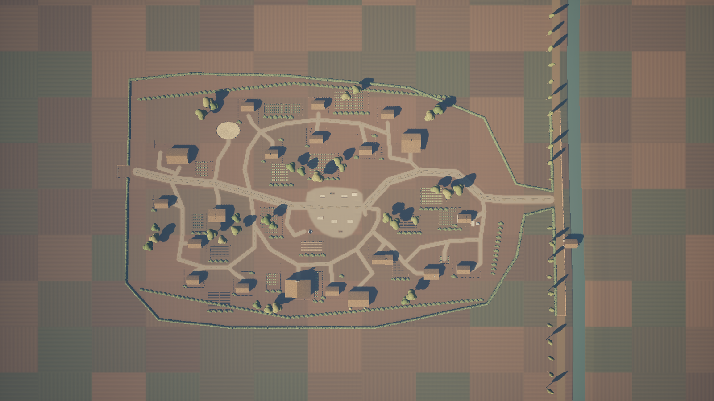
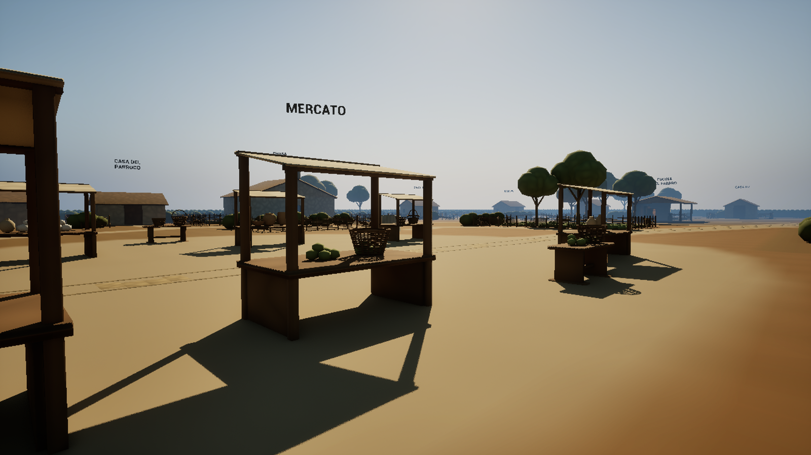
Nord in alto. Misure in metri.
Clicca un punto per aprire i dettagli. Da tastiera: Tab, poi Invio o Spazio; Esc per chiudere.
Cliccare un edificio per la sua scheda. Sigle: CH chiesa; CV capovillaggio; RB Rinaldo e Beatrice; F fucina; FO/FN fienili ovest/nord. Giallo: interni percorribili; verde chiaro: altri volumi. Origine al mercato; X verso Est, Y verso Nord per convenzione LD. Il diagramma ha Nord in alto; la panoramica aerea ha Sud in alto. Il canale è rappresentato schematicamente; per la geometria esatta usare Landscape e dati allegati.
Ingombri del modulo
Landscape: 504 × 504 m. Inviluppo degli usi del villaggio R2: circa 13.066 m², pari a circa 2,02 volte l’R1; non è l’area totale calpestabile né l’intera campagna. Gli edifici non sono stati ingranditi.
Strada principale 4 m; accessi 2 m. Porte delle shell 1,40 × 2,10 m; fronte libero di riferimento 2 m.
Raccordi da conservare
Ovest: imbocco riservato di 6 m verso il futuro Belvedere, oggi protetto da graticcio provvisorio arretrato. Il collegamento e lo spawn definitivo sul Belvedere saranno progettati in seguito.
Est: argine sul lato del villaggio percorribile, canale come limite. Nessun ponte o attraversamento autorizzato. Canale nominale 6 m; cresta argine 4 m.
Aprire la pianta metrica R2 approvata · Per i tracciati esatti e i punti di raccordo consultare i dati JSON allegati.
Funzioni, ingombri e accessibilità.
W × D × H: larghezza e profondità esterne delle pareti; altezza totale comprensiva del tetto. Gli aggetti sono aggiuntivi. Quote verticali dei profili di copertura relative alla base dell’edificio; base del kit principale Z +0,40 m.
| ID | Destinazione | W × D × H · m | Centro X; Y · m | Accessibilità approvata |
|---|---|---|---|---|
| CHURCH | CHIESA | 12 × 8 × 7 | -18; 42 | Interno percorribile |
| CHIEF_HOME | CASA CAPOVILLAGGIO | 9 × 7 × 4 | 38; -31 | Interno percorribile |
| FORGE | FUCINA DEL FABBRO | 8 × 6 × 3.5 | -58; 6 | Tettoia aperta |
| HOME_RINALDO | CASA RINALDO E BEATRICE | 7 × 5 × 3.5 | 48; 35 | Interno percorribile |
| BARN_W | FIENILE OVEST | 10 × 7 × 4 | -77.5; -23.5 | Edificio chiuso; accesso esterno |
| BARN_N | FIENILE NORD | 10 × 7 × 4 | 12; 47.5 | Edificio chiuso; accesso esterno |
| H1 | CASA 01 | 6 × 4 × 3.5 | -31; -24.5 | Edificio chiuso; accesso esterno |
| H2 | CASA DEL VENDITORE DI CESTE | 6 × 4 × 3.5 | -9; -32 | Edificio chiuso; accesso esterno |
| H3 | CASA DEL MEDICO | 6 × 4 × 3.5 | 15.5; -26.5 | Interno percorribile |
| H4 | CASA DEL FORNAIO | 6 × 4 × 3.5 | 22; 28 | Edificio chiuso; accesso esterno |
| H5 | CASA DEL PARROCO | 6 × 4 × 3.5 | -1; 43.5 | Edificio chiuso; accesso esterno |
| H6 | CASA 06 | 6 × 4 × 3.5 | -69; 20 | Edificio chiuso; accesso esterno |
| H7 | CASA 07 | 6 × 4 × 3.5 | -85.5; 0 | Edificio chiuso; accesso esterno |
| H8 | CASA 08 | 6 × 4 × 3.5 | -70; 38 | Edificio chiuso; accesso esterno |
| H9 | CASA 09 | 6 × 4 × 3.5 | -45.5; 42 | Edificio chiuso; accesso esterno |
| H10 | CASA 10 | 6 × 4 × 3.5 | -43; -48 | Edificio chiuso; accesso esterno |
| H11 | CASA 11 | 6 × 4 × 3.5 | -8; -49 | Edificio chiuso; accesso esterno |
| H12 | CASA 12 | 6 × 4 × 3.5 | 26.5; -44.5 | Edificio chiuso; accesso esterno |
| H13 | CASA E BOTTEGA DEL VASAIO | 6 × 4 × 3.5 | 64.5; 7.5 | Edificio chiuso; accesso esterno |
| H14 | CASA DEL MUGNAIO | 6 × 4 × 3.5 | 64; 33 | Edificio chiuso; accesso esterno |
Quattro interni attraversabili: chiesa, capovillaggio, Rinaldo e Beatrice, medico H3. La fucina è una tettoia aperta. Le altre abitazioni restano chiuse: non occorre aggiungere interni o meccaniche per interpretare il greybox.
CHURCH CHIESA 12 × 8 × 7 m
Interno percorribile.
Ingombro pareti e altezza: 12 × 8 × 7 m. Altezza comprensiva di tetto; chiesa comprensiva del coronamento. Pareti del kit: 0.25 m.
Copertura di riferimento: Gronda 3.45 m; colmo 5.7 m; aggetto 0.3 m. Quote relative al piano base; non confondere il colmo della falda con l’altezza massima del complesso.
Centro: X -18 / Y 42 m; base del kit Z +0,40 m. Conservare orientamento e aperture del proxy salvato.
Intervento Environment: sostituire le superfici e articolare travi, murature, infissi e materiali mantenendo ingombro, ingresso e passaggi. Per aggiungere piani, aprire una casa chiusa o spostare una facciata occorre revisione LD.
CHIEF_HOME CASA CAPOVILLAGGIO 9 × 7 × 4 m
Interno percorribile. Portico appartenente al complesso: 9 × 2 × 3 m.
Ingombro pareti e altezza: 9 × 7 × 4 m. Altezza comprensiva di tetto; chiesa comprensiva del coronamento. Pareti del kit: 0.25 m.
Copertura di riferimento: Gronda 3.05 m; colmo 4 m; aggetto 0.3 m. Quote relative al piano base; non confondere il colmo della falda con l’altezza massima del complesso.
Centro: X 38 / Y -31 m; base del kit Z +0,40 m. Conservare orientamento e aperture del proxy salvato.
Intervento Environment: sostituire le superfici e articolare travi, murature, infissi e materiali mantenendo ingombro, ingresso e passaggi. Per aggiungere piani, aprire una casa chiusa o spostare una facciata occorre revisione LD.
FORGE FUCINA DEL FABBRO 8 × 6 × 3.5 m
Tettoia aperta. Forgia con braci statiche e luce calda locale; nessuna simulazione.
Ingombro pareti e altezza: 8 × 6 × 3.5 m. Altezza comprensiva di tetto; chiesa comprensiva del coronamento. Pareti del kit: 0.25 m.
Copertura di riferimento: Gronda 2.65 m; colmo 3.5 m; aggetto 0.25 m. Quote relative al piano base; non confondere il colmo della falda con l’altezza massima del complesso.
Centro: X -58 / Y 6 m; base del kit Z +0,40 m. Conservare orientamento e aperture del proxy salvato.
Intervento Environment: sostituire le superfici e articolare travi, murature, infissi e materiali mantenendo ingombro, ingresso e passaggi. Per aggiungere piani, aprire una casa chiusa o spostare una facciata occorre revisione LD.
HOME_RINALDO CASA RINALDO E BEATRICE 7 × 5 × 3.5 m
Interno percorribile.
Ingombro pareti e altezza: 7 × 5 × 3.5 m. Altezza comprensiva di tetto; chiesa comprensiva del coronamento. Pareti del kit: 0.25 m.
Copertura di riferimento: Gronda 2.4 m; colmo 3.5 m; aggetto 0.25 m. Quote relative al piano base; non confondere il colmo della falda con l’altezza massima del complesso.
Centro: X 48 / Y 35 m; base del kit Z +0,40 m. Conservare orientamento e aperture del proxy salvato.
Intervento Environment: sostituire le superfici e articolare travi, murature, infissi e materiali mantenendo ingombro, ingresso e passaggi. Per aggiungere piani, aprire una casa chiusa o spostare una facciata occorre revisione LD.
BARN_W FIENILE OVEST 10 × 7 × 4 m
Edificio chiuso; accesso esterno.
Ingombro pareti e altezza: 10 × 7 × 4 m. Altezza comprensiva di tetto; chiesa comprensiva del coronamento. Pareti del kit: 0.25 m.
Copertura di riferimento: Gronda 2.5 m; colmo 4 m; aggetto 0.25 m. Quote relative al piano base; non confondere il colmo della falda con l’altezza massima del complesso.
Centro: X -77.5 / Y -23.5 m; base del kit Z +0,40 m. Conservare orientamento e aperture del proxy salvato.
Intervento Environment: sostituire le superfici e articolare travi, murature, infissi e materiali mantenendo ingombro, ingresso e passaggi. Per aggiungere piani, aprire una casa chiusa o spostare una facciata occorre revisione LD.
BARN_N FIENILE NORD 10 × 7 × 4 m
Edificio chiuso; accesso esterno.
Ingombro pareti e altezza: 10 × 7 × 4 m. Altezza comprensiva di tetto; chiesa comprensiva del coronamento. Pareti del kit: 0.25 m.
Copertura di riferimento: Gronda 2.5 m; colmo 4 m; aggetto 0.25 m. Quote relative al piano base; non confondere il colmo della falda con l’altezza massima del complesso.
Centro: X 12 / Y 47.5 m; base del kit Z +0,40 m. Conservare orientamento e aperture del proxy salvato.
Intervento Environment: sostituire le superfici e articolare travi, murature, infissi e materiali mantenendo ingombro, ingresso e passaggi. Per aggiungere piani, aprire una casa chiusa o spostare una facciata occorre revisione LD.
H1 CASA 01 6 × 4 × 3.5 m
Edificio chiuso; accesso esterno.
Ingombro pareti e altezza: 6 × 4 × 3.5 m. Altezza comprensiva di tetto; chiesa comprensiva del coronamento. Pareti del kit: 0.25 m.
Copertura di riferimento: Gronda 2.4 m; colmo 3.5 m; aggetto 0.25 m. Quote relative al piano base; non confondere il colmo della falda con l’altezza massima del complesso.
Centro: X -31 / Y -24.5 m; base del kit Z +0,40 m. Conservare orientamento e aperture del proxy salvato.
Intervento Environment: sostituire le superfici e articolare travi, murature, infissi e materiali mantenendo ingombro, ingresso e passaggi. Per aggiungere piani, aprire una casa chiusa o spostare una facciata occorre revisione LD.
H2 CASA DEL VENDITORE DI CESTE 6 × 4 × 3.5 m
Edificio chiuso; accesso esterno. Vendita di ceste; non laboratorio di produzione attestato.
Ingombro pareti e altezza: 6 × 4 × 3.5 m. Altezza comprensiva di tetto; chiesa comprensiva del coronamento. Pareti del kit: 0.25 m.
Copertura di riferimento: Gronda 2.4 m; colmo 3.5 m; aggetto 0.25 m. Quote relative al piano base; non confondere il colmo della falda con l’altezza massima del complesso.
Centro: X -9 / Y -32 m; base del kit Z +0,40 m. Conservare orientamento e aperture del proxy salvato.
Intervento Environment: sostituire le superfici e articolare travi, murature, infissi e materiali mantenendo ingombro, ingresso e passaggi. Per aggiungere piani, aprire una casa chiusa o spostare una facciata occorre revisione LD.
H3 CASA DEL MEDICO 6 × 4 × 3.5 m
Interno percorribile. Casa del medico; distinta da Rinaldo e Beatrice.
Ingombro pareti e altezza: 6 × 4 × 3.5 m. Altezza comprensiva di tetto; chiesa comprensiva del coronamento. Pareti del kit: 0.25 m.
Copertura di riferimento: Gronda 2.4 m; colmo 3.5 m; aggetto 0.25 m. Quote relative al piano base; non confondere il colmo della falda con l’altezza massima del complesso.
Centro: X 15.5 / Y -26.5 m; base del kit Z +0,40 m. Conservare orientamento e aperture del proxy salvato.
Intervento Environment: sostituire le superfici e articolare travi, murature, infissi e materiali mantenendo ingombro, ingresso e passaggi. Per aggiungere piani, aprire una casa chiusa o spostare una facciata occorre revisione LD.
H4 CASA DEL FORNAIO 6 × 4 × 3.5 m
Edificio chiuso; accesso esterno. Casa chiusa; forno accessibile nella corte, sotto annesso est.
Ingombro pareti e altezza: 6 × 4 × 3.5 m. Altezza comprensiva di tetto; chiesa comprensiva del coronamento. Pareti del kit: 0.25 m.
Copertura di riferimento: Gronda 2.4 m; colmo 3.5 m; aggetto 0.25 m. Quote relative al piano base; non confondere il colmo della falda con l’altezza massima del complesso.
Centro: X 22 / Y 28 m; base del kit Z +0,40 m. Conservare orientamento e aperture del proxy salvato.
Intervento Environment: sostituire le superfici e articolare travi, murature, infissi e materiali mantenendo ingombro, ingresso e passaggi. Per aggiungere piani, aprire una casa chiusa o spostare una facciata occorre revisione LD.
H5 CASA DEL PARROCO 6 × 4 × 3.5 m
Edificio chiuso; accesso esterno. Abitazione del parroco; distinta dalla chiesa.
Ingombro pareti e altezza: 6 × 4 × 3.5 m. Altezza comprensiva di tetto; chiesa comprensiva del coronamento. Pareti del kit: 0.25 m.
Copertura di riferimento: Gronda 2.4 m; colmo 3.5 m; aggetto 0.25 m. Quote relative al piano base; non confondere il colmo della falda con l’altezza massima del complesso.
Centro: X -1 / Y 43.5 m; base del kit Z +0,40 m. Conservare orientamento e aperture del proxy salvato.
Intervento Environment: sostituire le superfici e articolare travi, murature, infissi e materiali mantenendo ingombro, ingresso e passaggi. Per aggiungere piani, aprire una casa chiusa o spostare una facciata occorre revisione LD.
H6 CASA 06 6 × 4 × 3.5 m
Edificio chiuso; accesso esterno.
Ingombro pareti e altezza: 6 × 4 × 3.5 m. Altezza comprensiva di tetto; chiesa comprensiva del coronamento. Pareti del kit: 0.25 m.
Copertura di riferimento: Gronda 2.4 m; colmo 3.5 m; aggetto 0.25 m. Quote relative al piano base; non confondere il colmo della falda con l’altezza massima del complesso.
Centro: X -69 / Y 20 m; base del kit Z +0,40 m. Conservare orientamento e aperture del proxy salvato.
Intervento Environment: sostituire le superfici e articolare travi, murature, infissi e materiali mantenendo ingombro, ingresso e passaggi. Per aggiungere piani, aprire una casa chiusa o spostare una facciata occorre revisione LD.
H7 CASA 07 6 × 4 × 3.5 m
Edificio chiuso; accesso esterno.
Ingombro pareti e altezza: 6 × 4 × 3.5 m. Altezza comprensiva di tetto; chiesa comprensiva del coronamento. Pareti del kit: 0.25 m.
Copertura di riferimento: Gronda 2.4 m; colmo 3.5 m; aggetto 0.25 m. Quote relative al piano base; non confondere il colmo della falda con l’altezza massima del complesso.
Centro: X -85.5 / Y 0 m; base del kit Z +0,40 m. Conservare orientamento e aperture del proxy salvato.
Intervento Environment: sostituire le superfici e articolare travi, murature, infissi e materiali mantenendo ingombro, ingresso e passaggi. Per aggiungere piani, aprire una casa chiusa o spostare una facciata occorre revisione LD.
H8 CASA 08 6 × 4 × 3.5 m
Edificio chiuso; accesso esterno.
Ingombro pareti e altezza: 6 × 4 × 3.5 m. Altezza comprensiva di tetto; chiesa comprensiva del coronamento. Pareti del kit: 0.25 m.
Copertura di riferimento: Gronda 2.4 m; colmo 3.5 m; aggetto 0.25 m. Quote relative al piano base; non confondere il colmo della falda con l’altezza massima del complesso.
Centro: X -70 / Y 38 m; base del kit Z +0,40 m. Conservare orientamento e aperture del proxy salvato.
Intervento Environment: sostituire le superfici e articolare travi, murature, infissi e materiali mantenendo ingombro, ingresso e passaggi. Per aggiungere piani, aprire una casa chiusa o spostare una facciata occorre revisione LD.
H9 CASA 09 6 × 4 × 3.5 m
Edificio chiuso; accesso esterno.
Ingombro pareti e altezza: 6 × 4 × 3.5 m. Altezza comprensiva di tetto; chiesa comprensiva del coronamento. Pareti del kit: 0.25 m.
Copertura di riferimento: Gronda 2.4 m; colmo 3.5 m; aggetto 0.25 m. Quote relative al piano base; non confondere il colmo della falda con l’altezza massima del complesso.
Centro: X -45.5 / Y 42 m; base del kit Z +0,40 m. Conservare orientamento e aperture del proxy salvato.
Intervento Environment: sostituire le superfici e articolare travi, murature, infissi e materiali mantenendo ingombro, ingresso e passaggi. Per aggiungere piani, aprire una casa chiusa o spostare una facciata occorre revisione LD.
H10 CASA 10 6 × 4 × 3.5 m
Edificio chiuso; accesso esterno.
Ingombro pareti e altezza: 6 × 4 × 3.5 m. Altezza comprensiva di tetto; chiesa comprensiva del coronamento. Pareti del kit: 0.25 m.
Copertura di riferimento: Gronda 2.4 m; colmo 3.5 m; aggetto 0.25 m. Quote relative al piano base; non confondere il colmo della falda con l’altezza massima del complesso.
Centro: X -43 / Y -48 m; base del kit Z +0,40 m. Conservare orientamento e aperture del proxy salvato.
Intervento Environment: sostituire le superfici e articolare travi, murature, infissi e materiali mantenendo ingombro, ingresso e passaggi. Per aggiungere piani, aprire una casa chiusa o spostare una facciata occorre revisione LD.
H11 CASA 11 6 × 4 × 3.5 m
Edificio chiuso; accesso esterno.
Ingombro pareti e altezza: 6 × 4 × 3.5 m. Altezza comprensiva di tetto; chiesa comprensiva del coronamento. Pareti del kit: 0.25 m.
Copertura di riferimento: Gronda 2.4 m; colmo 3.5 m; aggetto 0.25 m. Quote relative al piano base; non confondere il colmo della falda con l’altezza massima del complesso.
Centro: X -8 / Y -49 m; base del kit Z +0,40 m. Conservare orientamento e aperture del proxy salvato.
Intervento Environment: sostituire le superfici e articolare travi, murature, infissi e materiali mantenendo ingombro, ingresso e passaggi. Per aggiungere piani, aprire una casa chiusa o spostare una facciata occorre revisione LD.
H12 CASA 12 6 × 4 × 3.5 m
Edificio chiuso; accesso esterno.
Ingombro pareti e altezza: 6 × 4 × 3.5 m. Altezza comprensiva di tetto; chiesa comprensiva del coronamento. Pareti del kit: 0.25 m.
Copertura di riferimento: Gronda 2.4 m; colmo 3.5 m; aggetto 0.25 m. Quote relative al piano base; non confondere il colmo della falda con l’altezza massima del complesso.
Centro: X 26.5 / Y -44.5 m; base del kit Z +0,40 m. Conservare orientamento e aperture del proxy salvato.
Intervento Environment: sostituire le superfici e articolare travi, murature, infissi e materiali mantenendo ingombro, ingresso e passaggi. Per aggiungere piani, aprire una casa chiusa o spostare una facciata occorre revisione LD.
H13 CASA E BOTTEGA DEL VASAIO 6 × 4 × 3.5 m
Edificio chiuso; accesso esterno. Casa chiusa; banco, tettoia e fornace nella corte esterna.
Ingombro pareti e altezza: 6 × 4 × 3.5 m. Altezza comprensiva di tetto; chiesa comprensiva del coronamento. Pareti del kit: 0.25 m.
Copertura di riferimento: Gronda 2.4 m; colmo 3.5 m; aggetto 0.25 m. Quote relative al piano base; non confondere il colmo della falda con l’altezza massima del complesso.
Centro: X 64.5 / Y 7.5 m; base del kit Z +0,40 m. Conservare orientamento e aperture del proxy salvato.
Intervento Environment: sostituire le superfici e articolare travi, murature, infissi e materiali mantenendo ingombro, ingresso e passaggi. Per aggiungere piani, aprire una casa chiusa o spostare una facciata occorre revisione LD.
H14 CASA DEL MUGNAIO 6 × 4 × 3.5 m
Edificio chiuso; accesso esterno. Abitazione del mugnaio; distinta dal mulino tecnico sul canale.
Ingombro pareti e altezza: 6 × 4 × 3.5 m. Altezza comprensiva di tetto; chiesa comprensiva del coronamento. Pareti del kit: 0.25 m.
Copertura di riferimento: Gronda 2.4 m; colmo 3.5 m; aggetto 0.25 m. Quote relative al piano base; non confondere il colmo della falda con l’altezza massima del complesso.
Centro: X 64 / Y 33 m; base del kit Z +0,40 m. Conservare orientamento e aperture del proxy salvato.
Intervento Environment: sostituire le superfici e articolare travi, murature, infissi e materiali mantenendo ingombro, ingresso e passaggi. Per aggiungere piani, aprire una casa chiusa o spostare una facciata occorre revisione LD.
MILL MULINO TECNICO ruota Ø 3 m
Corpo del kit H14: 6 × 4 × 3,50 m, ruotato di 180°, scala 1. Fondazione: 6 × 4 m, profondità sotto la base 2,20 m. Centro X 117,10 / Y 20,00 m, base Z +0,55 m. Ruota: centro X 121,40 / Y 20,00 / Z 0,80 m, diametro 3 m, larghezza nominale 0,70 m; mozzo e pale possono sporgere. Il corpo tecnico resta chiuso.
Conservare il corpo, l’ingombro della ruota e la fondazione del proxy nativo; i dati JSON includono le istanze del kit e le trasformazioni salvate. Nessun nuovo corso d’acqua interno. Non è verificato che portata e salto del canale possano azionare la ruota: l’eventuale soluzione idraulica richiede progettazione dedicata.
Ogni attività deve avere un posto leggibile.
Fornaio · H4
Casa 6 × 4 × 3,50 m, chiusa. Forno nell’annesso est, accessibile dalla corte: centro 26,50; 28,00 m. Copertura dell’annesso 4 × 5 m; colmo a 3,10 m dalla base, gronda a 2,30 m; trave frontale libera a 2,15 m.
Conservare bocca ad arco realmente aperta, piano interno, fondo arretrato e canna fumaria oltre la copertura. Il forno appartiene alla corte del fornaio e al suo annesso.
Fabbro · Fucina
Tettoia 8 × 6 × 3,50 m. Accesso e passaggio sotto la copertura devono restare liberi. Le braci e la luce locale indicano la funzione; attrezzature e superfici richiedono lavoro Environment.
Nessuna animazione del fuoco, interazione o personaggio richiesti dalla consegna.
Ceste · Vasaio · Parroco
H2: casa del venditore di ceste, con prodotti nella corte. H13: casa e bottega del vasaio, con piano di lavoro, tettoia e fornace esterna. H5: casa del parroco, distinta dalla chiesa.
Attività da rendere riconoscibili attraverso gli asset e gli spazi di lavoro. I proxy non certificano una ricostruzione archeologica puntuale; non aggiungere attività narrative o processi produttivi non concordati.
Piazza e aree rurali
8 postazioni: sei banchi coperti e due tavoli scoperti. Terra battuta collegata alla strada; mantenere le corsie già percorse e l’accesso alle merci. Il dato 18 × 10 m identifica il nucleo della piazza, non un recinto entro cui comprimere tutti i banchi.
Pozzo, aia sudovest, orto, recinto, fienili, graticci e masse verdi completano la lettura. Piazza e aia rappresentano l’uso ordinario del villaggio.
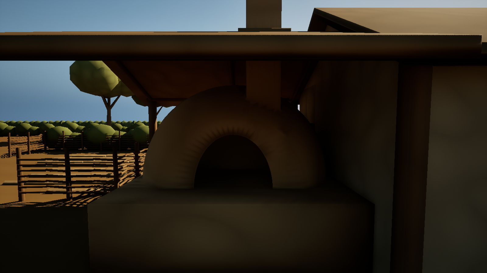
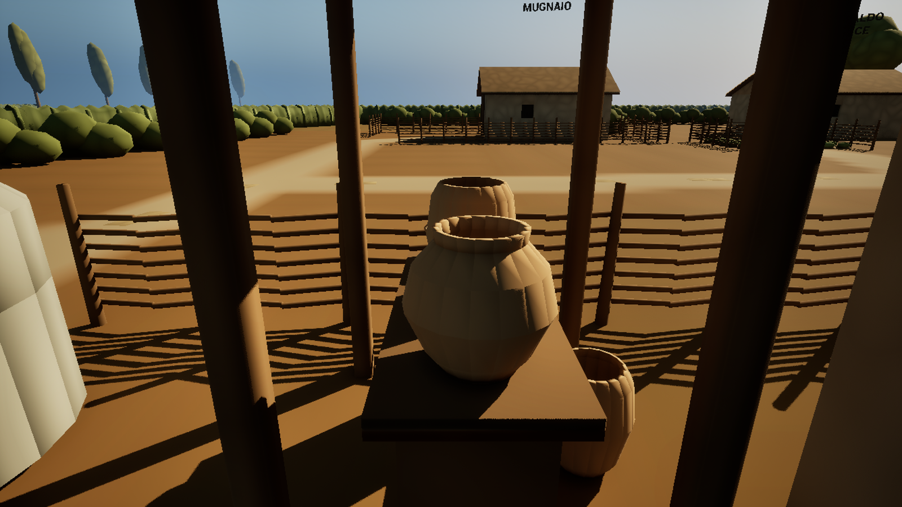
Cosa conservare. Cosa sviluppare.
Vincoli di gameplay e composizione
- Posizioni, orientamenti, ingombri delle pareti, altezze e gerarchia degli edifici approvati.
- Tracciati, larghezze, raccordi, quote percorribili e collisioni attraversate nel G5.
- Quattro shell accessibili, soglie, luce libera delle porte e spazio di approccio; passaggio sotto fucina e portico.
- Argine lato villaggio, canale come limite e imbocco futuro verso Belvedere.
- Identità dei mestieri, otto postazioni di mercato, corti e destinazioni riconoscibili.
- Scala del personaggio e ingombro di passaggio: l’asset deve adattarsi al player del livello. Conservare le collisioni utili alla navigazione durante la sostituzione dei proxy.
Libertà Environment
- Materiali, texture, degrado e costruzione delle superfici: pietra, legno, intonaci, coperture e terra rurale coerenti con le reference.
- Travi, infissi, ferramenta, dettagli dei tetti, merci e attrezzature entro gli ingombri e i passaggi approvati.
- Forme delle chiome e delle siepi, varietà e distribuzione delle masse senza chiudere percorsi e visuali utili.
- Transizioni terra/erba, usura e fango visivo conservando le quote e la continuità del suolo.
- Illuminazione e atmosfera verso le tavole; maggiore leggibilità degli interni e minore uniformità del terreno.
Da concordare con LD: spostare edifici, cambiare quote/collisioni dei passaggi, aggiungere piani o interni, collegare zone, creare un ponte, cambiare il funzionamento del mulino.
Per la forma artistica seguire le reference; per ingombri, quote, accessi e passaggi seguire il modello e la pianta metrica. Colori uniformi, masse schematiche e superfici provvisorie del greybox vanno sviluppati negli asset finali.
Dal volume di riferimento al kit artistico.
Architettura e collisioni
- Usare gli ingombri delle schede per pareti, tetti, portici e soglie. Articolare i componenti senza scalare l’intero edificio per ottenere un ingresso più largo.
- Conservare aperture, soglie e quattro shell attraversabili; porte libere 1,40 × 2,10 m e approccio libero di riferimento 2 m.
- Separare collisione strutturale e dettaglio ornamentale. Una collisione chiusa sull’intera casa non può tappare porte o interni percorribili.
- Graticci, alberi, merci e accessori devono lasciare libere strade, accessi e visuali indicate dalla pianta.
Famiglie di asset
- Edilizia: pareti, coperture a falde, travi, infissi, soglie, portico, tettoie e campanile a vela della chiesa.
- Mestieri: forno e camino del fornaio, forgia e attrezzatura del fabbro, banco e fornace del vasaio, ceste e componenti del mulino.
- Mercato e corti: sei banchi coperti, due tavoli, tessuti, contenitori e merci; pozzo, aia, orto e recinto.
- Margini: graticci, siepi, masse arboree, campi, sponde e finitura delle superfici del terreno.
Prima di sostituire un complesso, confrontare l’asset con il proxy nello stesso punto: ingombro, altezza, fronte d’ingresso, appoggio al terreno e passaggio del personaggio devono corrispondere. Modifiche a layout, quote o destinazioni richiedono confronto con il Level Design.
Architettura, materiali e atmosfera.
La composizione generale usa il villaggio ampliato e la pianta metrica allegata. Le immagini T01 guidano aspetto e atmosfera; non hanno scala metrica. Elementi lontani delle tavole, come torri o paesaggio esterno, non introducono automaticamente nuovi edifici nel modulo.
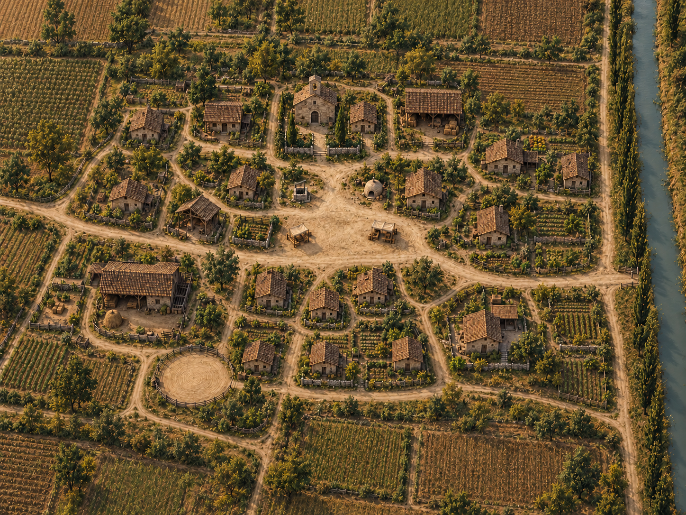
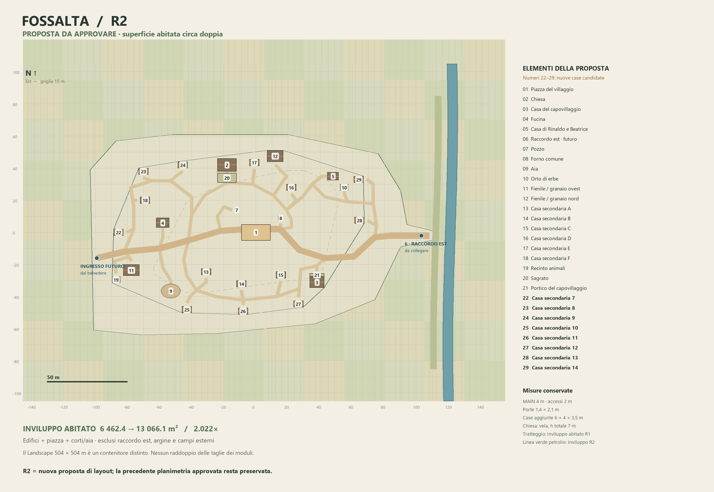
Tavole T01
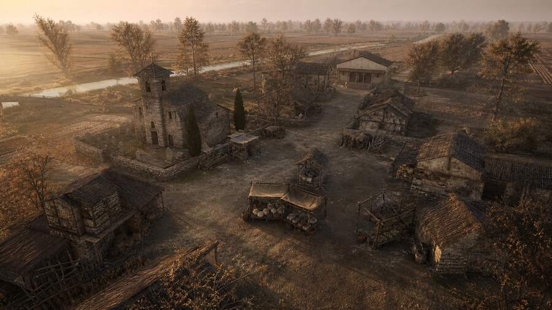
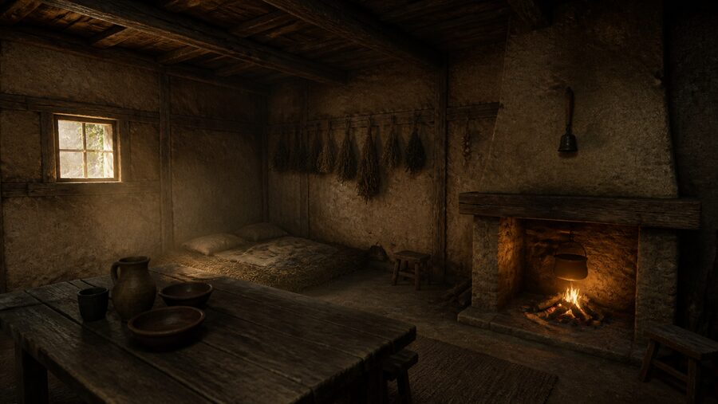
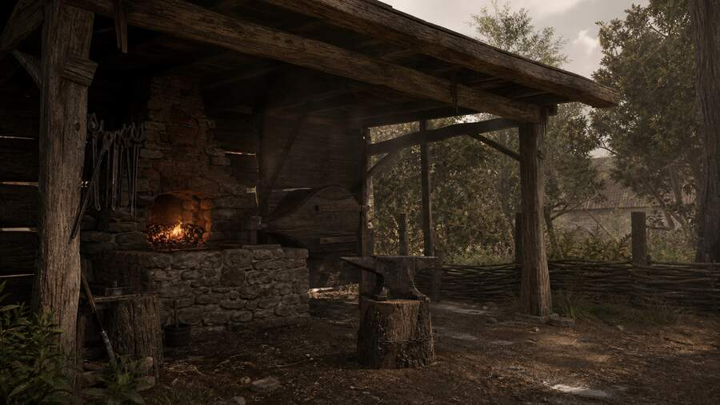
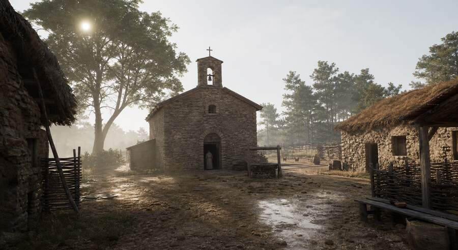
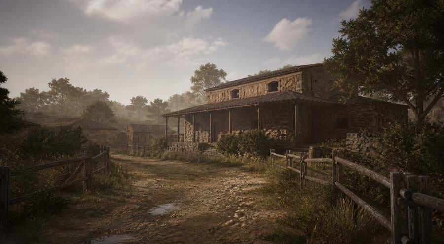
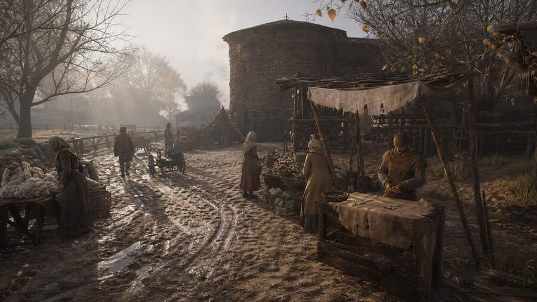
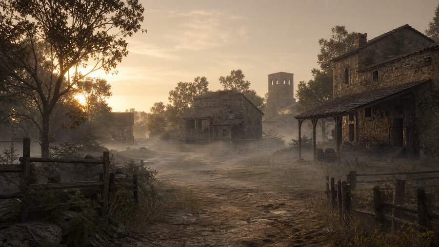
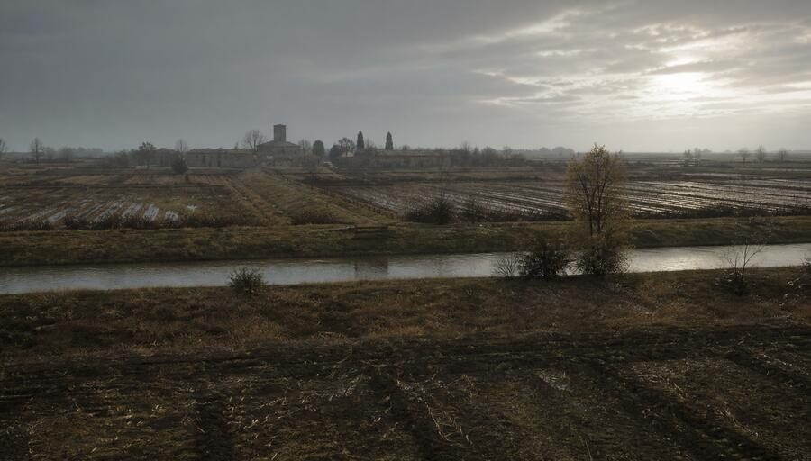
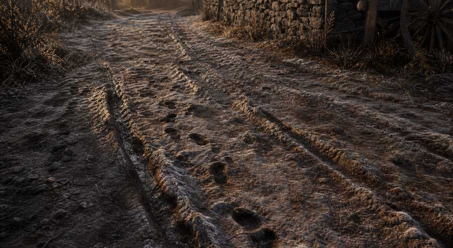
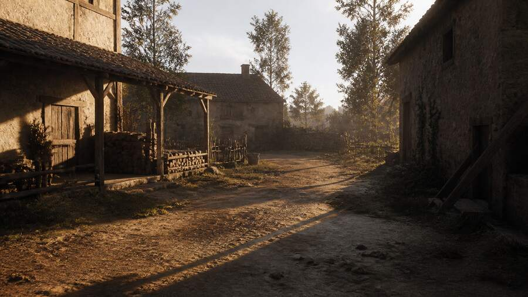
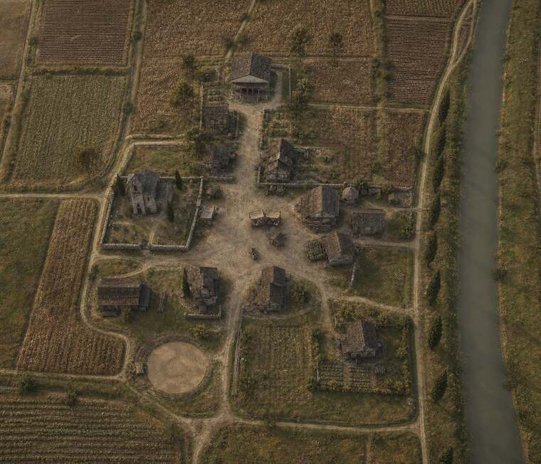
Aprire il livello e lavorare alla stessa scala.
- Aprire in Unreal Engine 5.8 il progetto
Sviluppo/Unreal Project/Roberto_Greybox_Sandbox/WhereTheFogDies/WhereTheFogDies.uproject. - Aprire la mappa
/Game/Developers/Roberto/Greybox_WTFD/Maps/L_Village_A_Attempt2_R2_G5. Questa è la sorgente 3D delle misure e dei passaggi descritti. - Usare il player e le impostazioni del livello per valutare accessi, interni e scala. Per la prova partire dal PlayerStart salvato; il Belvedere e il suo collegamento appartengono a un modulo successivo.
- Realizzare gli asset in una copia di lavoro Environment e mantenere il modello di riferimento per il confronto. Conservare coordinate, scala, aperture e collisioni dei percorsi.
- Per trasferire il livello in un altro progetto usare Asset Actions → Migrate sulla mappa, includendo le dipendenze proposte da Unreal. Il solo file .umap non contiene mesh, materiali, Landscape e Blueprint.
Interni e superfici del modello possono essere schematici o scarsamente illuminati. Per forma, materiale e leggibilità finale usare le reference e le indicazioni di questo manuale; per spazi di attraversamento usare la geometria di riferimento.